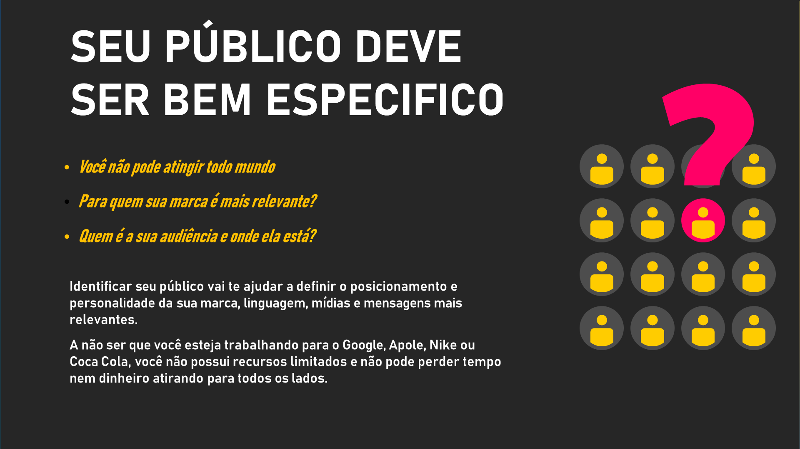
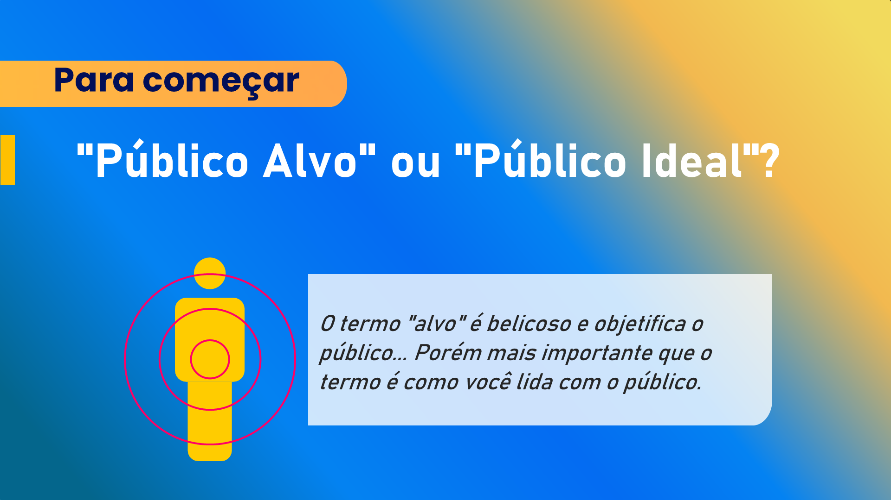
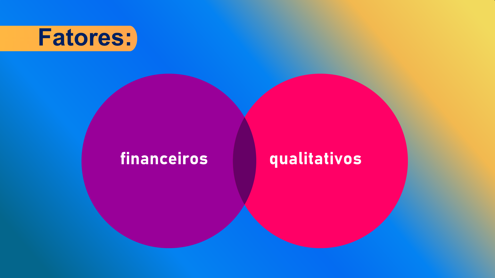
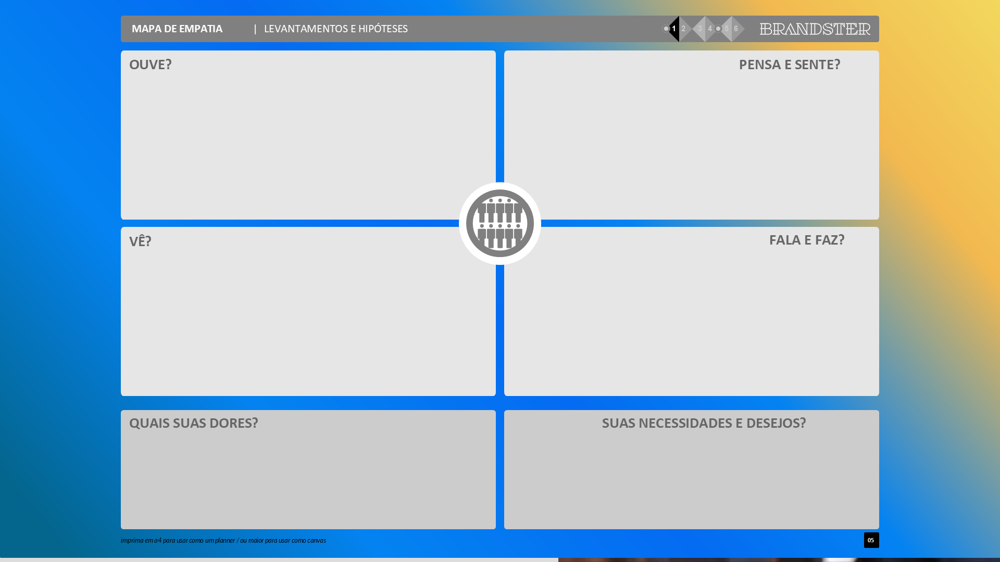
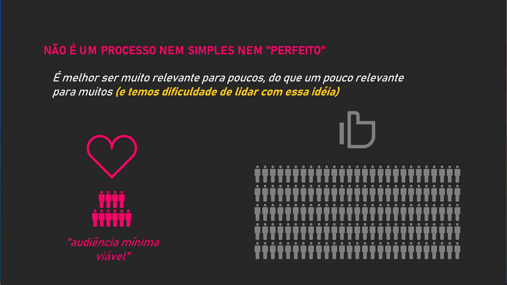

10 Definição de Público Ideal no Agronegócio
Você sabe para quem vende, mas sabe para quem deveria vender? A definição do público ideal é uma das decisões mais impactantes na construção de uma marca agropecuária.
10.1 De “todo mundo” para “alguém específico”

Quando perguntamos a um produtor rural quem é o seu público, as respostas mais comuns são “todo mundo que consome café”, “supermercados, restaurantes e padarias” ou “homens e mulheres, classe B e C, de 25 a 60 anos”.
Essas respostas descrevem um universo de potenciais compradores, não um público ideal. Quando o público é “todo mundo”, a comunicação da marca se torna genérica, a proposta de valor fica diluída e o negócio compete com todos os players do mercado.
Quanto mais precisa for a definição do público ideal, mais poderosa será a marca. Não porque você excluirá compradores, mas porque atrairá com muito mais intensidade aqueles que se identificam com a sua proposta.
10.2 B2B ou B2C? No agro, frequentemente ambos
Antes de definir o público ideal, é necessário compreender a natureza da sua venda:
B2C (Business to Consumer) é a venda direta ao consumidor final, como em feira do produtor, loja da fazenda, e-commerce direto ou assinatura de cesta.
B2B (Business to Business) é a venda para outra empresa, como a cooperativa que fornece para agroindústria, o produtor que abastece supermercados, a fazenda que fornece para restaurantes ou a vinícola que vende para distribuidores.
Muitos negócios agropecuários são híbridos, vendem para empresas (B2B) e diretamente ao consumidor (B2C). Cada canal pode demandar uma abordagem de marca diferente, mas o posicionamento essencial deve ser o mesmo.
10.3 Público-alvo vs. público ideal

Há uma distinção sutil, mas importante. O conceito de público-alvo remete a uma mentalidade de “mirar e atirar”, que objetifica o comprador e tenta convencê-lo. Já o conceito de público ideal remete a uma mentalidade de “afinidade e atração”, que identifica as pessoas que naturalmente se identificam com a marca e constrói valor para elas.
Não se trata de uma mudança apenas de nomenclatura, mas de postura: em vez de perseguir o comprador, você atrai o comprador certo ao oferecer valor genuíno.
10.4 Como definir o público ideal
10.4.1 Passo 1, Entenda o público atual
Antes de definir o público ideal, mapeie quem compra hoje. Pergunte-se quem são (perfil demográfico, porte se B2B, localização), por que compram (motivação principal, seja preço, qualidade, conveniência ou valores), como compram (canal, frequência, volume, processo de decisão), quais dão mais resultado (em receita, margem, recorrência e facilidade de relacionamento) e quais dão mais problema (inadimplência, exigências desproporcionais, baixa margem).
10.4.2 Passo 2, Aplique o 80/20

Identifique os 20% de clientes que geram 80% do resultado positivo. Analise o que eles têm em comum, seja um perfil semelhante, valores compartilhados, canal de chegada similar ou comportamento de compra parecido.
Esses padrões são o embrião do seu público ideal.
10.4.3 Passo 3, Vá além da demografia
Dados demográficos (idade, renda, localização) são importantes, mas insuficientes. Para construir uma marca que se conecta, é necessário compreender:
Motivações (o que move a decisão de compra) podem incluir saúde e bem-estar, sustentabilidade e responsabilidade ambiental, status e sofisticação, praticidade e conveniência, economia e custo-benefício, ou a conexão com o produtor e a terra.
Comportamentos (como agem) revelam se pesquisam antes de comprar, se valorizam redes sociais e indicações, se frequentam feiras e eventos gastronômicos, e se são fiéis a marcas ou experimentam constantemente.
Visão de mundo (no que acreditam) indica se valorizam o local versus o global, se preferem artesanal versus industrial, se priorizam saúde versus sabor versus preço, e se acreditam em consumo consciente.
10.4.4 Passo 4, Construa a persona

Uma persona é a descrição detalhada e personalizada de um membro representativo do seu público ideal. Não é ficção, é baseada em dados e observações reais, mas narrada de forma empática.
Exemplo de persona B2C:
Marina, 34 anos, Nutricionista em Salvador, mãe de dois filhos. Preocupa-se com alimentação saudável e busca produtos com rastreabilidade. Faz compras semanais em feiras orgânicas e complementa online. Segue produtores rurais no Instagram. Está disposta a pagar 30% a mais por produtos com história e certificação. Indica marcas que confia para amigas e colegas.
Exemplo de persona B2B:
Chef Ricardo, 42 anos, Proprietário de um restaurante de cozinha regional contemporânea em Recife. Valoriza ingredientes locais e de qualidade comprovada. Precisa de fornecedores confiáveis, com entrega pontual e consistência. Gosta de visitar propriedades e conhecer a origem dos insumos. Destaca o nome dos fornecedores no menu como diferencial do restaurante.
A persona é uma ferramenta de empatia, ajuda a “colocar rosto” no público ideal para tomar decisões mais assertivas. Mas lembre-se: ela representa um grupo, não um indivíduo. Você pode ter 2 ou 3 personas para diferentes segmentos do seu público.
10.5 O papel dos agentes de decisão (B2B)
Em vendas B2B no agro, a decisão de compra raramente é de uma pessoa só. O decisor é quem dá a palavra final (por exemplo, o proprietário do restaurante), o influenciador é quem pesquisa e recomenda (como o chef de cozinha ou o nutricionista), o usuário é quem efetivamente usa o produto (por exemplo, o cozinheiro) e o comprador é quem executa a compra (como o setor de compras).
Cada agente tem motivações diferentes. A marca precisa estar preparada para se comunicar com todos.
10.6 Segmentação: a arte de escolher

Definir o público ideal implica escolher, e escolher implica renunciar. Essa é a parte mais difícil. Produtores têm medo de “perder clientes” ao focar em um segmento.
Na prática, o oposto acontece: a marca que tenta falar com todos não fala com ninguém. A que foca em um público específico se torna referência naquele segmento e, por consequência, atrai públicos adjacentes.
Critérios para segmentação no agro:
| Critério | Perguntas | Exemplo |
|---|---|---|
| Geográfico | Onde estão? | Capitais do Nordeste, região Sul |
| Canal | Como compram? | Feiras, e-commerce, atacado, food service |
| Valor | Quanto pagam? | Premium, intermediário, popular |
| Comportamental | Por que compram? | Saúde, gourmet, conveniência, sustentabilidade |
| Porte (B2B) | Qual o tamanho? | Restaurantes independentes, redes, hotéis |
10.7 Exercício prático, Definição do público ideal
10.7.0.1 🌿 Ferramenta: Canvas de Público Ideal Agro
1. Mapeamento do público atual (80/20):
- Quem são os 20% de clientes com melhor resultado?
- O que eles têm em comum?
2. Perfil do público ideal:
- Demográfico: ___________________
- Motivação principal: ___________________
- Comportamento de compra: ___________________
- Visão de mundo: ___________________
- Canal preferido: ___________________
3. Persona principal:
- Nome fictício: ___________________
- Idade e perfil: ___________________
- O que busca: ___________________
- Como decide: ___________________
- Onde encontra informação: ___________________
- Quanto está disposto a pagar a mais por valor: ___________________
4. Verificação: